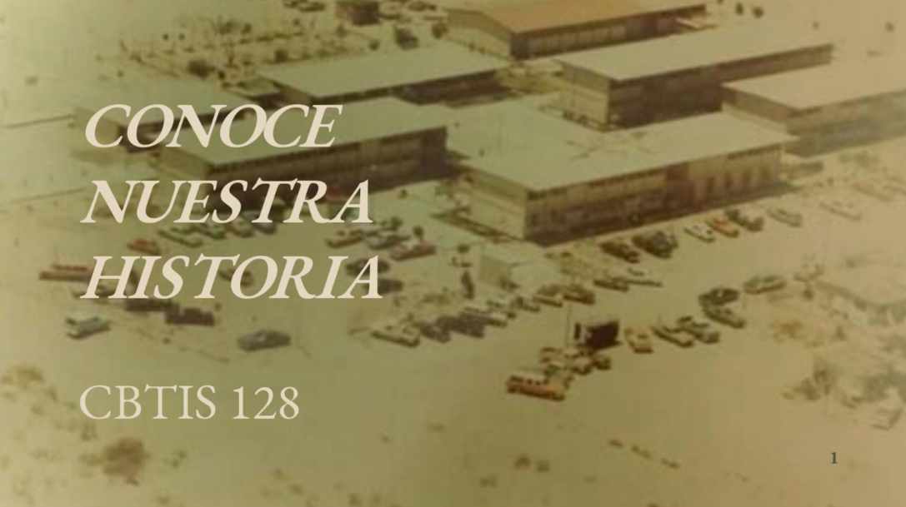

El 16 de Abril de 1971 es publicada en el Diario Oficial de la Federacion el acuerdo presidencial por el que se modifica la estructura organica administratica de la SEP y se da paso a la creacion de la Direccion General de Educacion Tecnologica Industrial, como una dependencia adscrita a la subcretaria de Educacion Media Superior (SEMS), dependiendo de la secretaria de Educacion Publica (SEP) que ofrece el servicio educativo del nivel medio superior tecnologico, en Agosto de ese mismo año se publican las funciones que tendra esta institucion y se integran a ella los centros de capacitacion para el trabajo industrial,escuelas tecnologicas insdustriales, los centros de estudios tecnologicos en el Distrito Federal y los centros de estudios tecnologicos foraneos.
el 15 de febrero de 1980 se mudarian a sus instalaciones propias, ubicadas en la calle Nueva Zelanda y mora #7870 en el fraccionamiento Oasis,ofertando las carreras tecnicas de Aire acondicionado y Refrigeracion, Electronica, Administracion, Gericultura y Alimentos. Durante los 37 años desde su fundcion el plantel ha estado a cargo de los directores: Ing.Salvador de Leon Anzures, Ing. Adolfo Gandara Rivera, Ing. Humberto Dominguez Rascon, Ing. Rosa Manuela Herrera, Ing.Francisco Gerardo Carrillo Castañeda, Lic. Norma Alicia Medina Rivas y el M.A Francisco Javier Garcia Valles. En la actualidad el plantel cuenta con una plantilla de 123 empleados:75 docentes, 48 administrativos y personal en servicios generales, atendiendo a una poblacion escolar de 2881 alumnos distribuidos en dos turnos, ofertando las especialidades de Laboratorista quimico, Gericultura, Administracion de Recursos Humanos, Programacion, Soporte y Mantenimiento de Equipo de Computo, Refrigeracion y Climatizacion, Electronica; convirtiendose asi, en una de las mas grandes del Estado y del subsistema DGETI.
